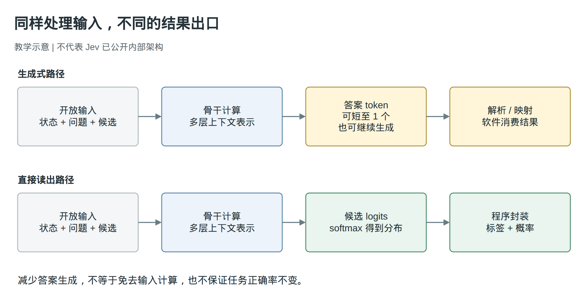
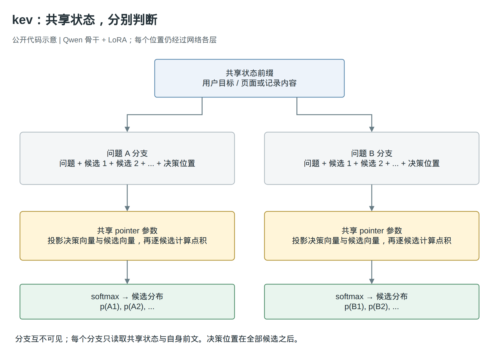
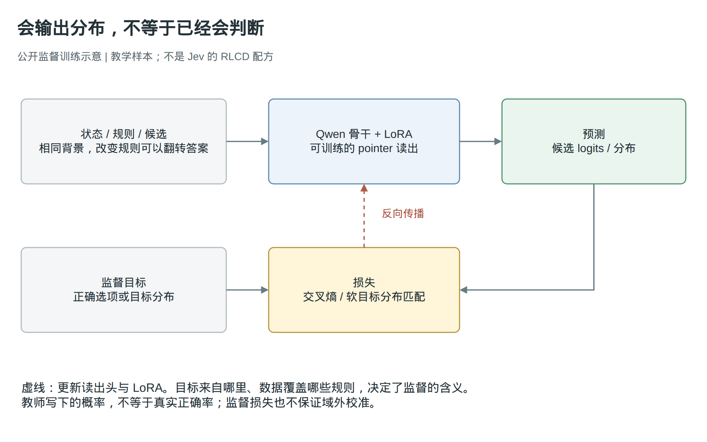

输入往往是开放的，输出却常常只有有限选项。真正值得重新设计的，是两者之间的计算。
资料截至 2026 年 9 月 20 日。本文区分 Jev 官方披露、社区公开实现与作者分析；所引用研究论文均发表于或公开于 2024 至 2026 年。
一、软件需要的是理解，还是一段回答
假设我们让一个助手处理网页上的订单。用户说：“这笔订单我不想取消了，只想把收货地址改成公司。”页面同时有“修改地址”“取消订单”“再次购买”三个按钮。
软件最终需要的结果很短：选择“修改地址”，返回对应的按钮引用。它不需要一句“根据您的描述，我认为应该点击修改地址”。可是，要得到这个短结果，模型仍然需要理解否定、意图变化，以及页面上的三个操作分别意味着什么。
这正是很多模型应用的不对称之处：输入的表达和情境可以不断变化，当前允许的输出却是一个明确的有限集合。 这里的“开放输入”不是无限长的上下文，而是我们无法事先列完用户会怎样表达、规则会怎样组合、环境会出现什么状态。相反，只要进入这一次决策，按钮、工具、路由或判断等级通常可以列出来。
有限集合也不等于简单问题。判断一段程序是否符合一项复杂约束，最后可能只有“是”或“否”；理解一份长记录之后决定下一步，最后也可能只需选择三个动作之一。答案有几个字，与得到答案需要多少知识和推理，是两回事。
Jev 把这种任务单独做成了一类模型服务：给它状态、问题和本次可选的结果，取回选择及相关概率，而不是一段自由回答。官方把重点放在有明确边界的快速判断上。1 标题里的“解耦”，说的是把理解输入的要求与生成回答文本的方式分开设计，并不是说已经在神经网络中找到了彼此独立的“理解模块”和“生成模块”。
生成不是唯一的结果出口
常见的生成式做法，是把用户请求和页面信息放入提示词，让语言模型返回动作。它可以先解释，再输出 JSON；也可以不解释，只生成一个受约束的标签。后者已经是很强的对照，不能为了凸显决策模型，就假设所有 LLM 都要长篇大论。
但即使把回答限制为 JSON，仍然有两个不同的问题：结果是否符合接口要求，以及结果是否符合真实意图。三个按钮的引用都可以是合法字符串，只有其中一个符合当前请求。Schema 解决的是可表达的结果边界，不负责证明选中了正确结果。2024 年的 Grammar-Aligned Decoding 进一步指出，满足语法约束与保持原模型在合法输出上的条件分布，也不是同一件事。2
另一条路是分类。若任务始终只有固定标签，已有监督分类器就是直接方案；若把问题和候选描述一起作为输入，条件分类也能面对新规则、新标签。我们不必先发明一个和分类完全不同的数学类别，才能讨论 Jev 的价值。
真正的问题更具体：能否利用语言模型已经学到的上下文表示，直接计算这次候选的分数，不再把分数和结果通过一串文本表达出来？这改变的是结果读出的路径。它可能减少答案序列的生成工作，却没有免除读取输入、比较选项和处理规则的计算。34

两种结果出口：教学示意，不代表 Jev 内部架构。
{kind=link}
图 1：上方保留答案 token 的生成过程，下方直接读出候选分布。生成式基线也可以只有一个答案 token；图中的差别不能直接换算成加速倍数。
这个区别还有另一面。生成有时不只是把已经完成的判断说出来，生成出的中间步骤也会继续进入后续计算。若任务依赖这样的多步展开，删掉它们以后，不能仅凭“答案很短”就认定能力不会改变。后面讨论训练和评测时，我们需要同时问：少做了什么工作，又是否少做了原来必要的工作。
二、从开放的上下文，到有限候选的分布
先看一条完整的决策路径。下面是教学数据，不是某次真实 API 调用，也不是官方 SDK 语法：
状态：用户不想取消订单，希望修改收货地址。
页面包含修改地址、取消订单、再次购买三个按钮。
问题：当前应该选择哪个操作？
候选：
edit_address 修改这笔订单的收货地址
cancel_order 取消这笔订单
buy_again 按原商品创建新订单
none 以上操作都不符合当前目标
状态提供判断证据，问题规定要判断什么，候选定义结果的含义。换一个网页，可以换一组候选；换一个目标，同样的页面也可能得到不同选择。输出空间在这一次调用中是有限的，不意味着它在训练前就已经固定。 Jev 的 Choice 接口正是由调用方提供选项和含义。1
官方还提供两种相邻形式：Noul 表达二元判断中“是”的概率；Score 根据有序等级返回位置以及相应分布和置信信息。1 它们让软件直接消费判断，不必从一段说明中提取数字。不过，接口告诉我们返回什么，并没有完整交代神经网络怎样计算。
要讲清内部过程，可以看社区项目 kev。它公开了骨干、输入组织、读出头和训练代码，因而能作为这条路线的可检查实例。下面的架构属于 kev，不是 Jev 官方架构。3
候选不只是输出标签，也进入了计算
kev 采用 Qwen 骨干，把状态、问题和各个候选编码成 token。它不使用原来的词表输出头来生成答案，而是取得骨干在不同位置产生的隐藏向量，再用专门的读出头评分。3
隐藏向量可以理解为模型读到某个位置时，对当前可见上下文形成的一组数值表示。这里并不存在先把自然语言完全理解好、再调用另一个确定性程序的边界；状态、规则和候选如何影响这些表示，本身就是网络要学会的事情。
其中两个位置最关键：每个候选的结束位置，以及放在全部候选之后的决策位置。前者提供对应候选的表示，后者能够读取本问题的全部候选。kev 将两类向量分别投影，再计算缩放点积：3
q = project_question(h_decide)
k_i = project_option(h_option_i)
z_i = dot(q, k_i) / sqrt(pointer_dimension)
p = softmax([z_1, ..., z_K])
这里的 z_i 是尚未归一化的候选分数，通常称为 logit；p 是在当前 K 个候选上归一化的分布。程序可以取最大值对应的候选，再把候选 ID 和概率封装成接口结果。不需要让神经网络逐个生成大括号、字段名和小数位。3
这里的“一次前向”仍然要穿过骨干的全部网络层，计算输入各位置的表示，并不是只运行最后一个分类层。它省去的是后续答案序列的自回归生成，不是把理解变成零成本操作。输入很长或候选很多时，前面的计算仍然可能占据主要开销。3
为什么不只为“修改地址”“取消订单”各训练一个固定权重？因为下一次调用可能出现完全不同的操作。kev 的评分参数在候选之间共享，候选含义由本次输入的文字和上下文表示。增加一个候选，增加的是一个需要编码和评分的对象，不必为这个业务类别单独增加一个输出神经元。这使结构能够接受动态候选；是否理解新候选，仍取决于模型表示与训练。3
决策位置为什么放在全部候选后面，也有直接原因。在因果注意力下，一个位置不能读取后面的文本。如果它还没看到最后几个选项就开始决定，后来的信息便无法参与这次读出。“以上都不符合”尤其需要比较整个集合，不能只看这个短语本身。3
同样，候选之间未必可以完全独立评分。“最便宜且能按时送达”要比较多个方案，而不是分别判断每个方案看起来是否不错。kev 默认的候选表示保留顺序相关上下文，末尾决策位置再读取完整列表；它也提供隔离候选的实验配置。这是两种可检验的设计选择，不能把某个配置的性质推广到所有版本。3
同一份状态，可以支持多道独立问题
处理一份长记录时，软件可能同时要问：该交给哪个工具？信息是否齐全？紧急程度属于哪一档？每个问题都使用同一份状态，但不一定需要看其他问题的内容。
kev 把状态放在共享前缀，各问题接在独立分支中。注意力掩码允许分支读取状态和自己的前文，禁止它读取其他问题分支；不同分支的位置编号也从状态末尾重新开始。这样，一个问题的附加说明不会因为排在前面，就意外进入另一个问题的判断。3

kev 公开实现：共享状态、隔离问题分支、候选读出。
{kind=link}
图 2：两道问题共享状态，各自读取问题和候选，分别形成分布。图中画出默认计算路径；候选隔离属于另一项可选配置。
这也创造了复用计算的机会：共享状态不必为每个问题重复构造一套前缀表示。但每个问题仍然要读取这份状态，并处理自己的候选。kev 使用显式注意力掩码，图上的分支不等于生产服务已经采用了最优稀疏算子。Hydragen 在 2024 年研究了共享前缀下的注意力分解与批处理，说明底层执行还有单独的优化空间；它不是 Jev 使用了该算法的证据。35
独立分支也划定了适用范围。如果第二个问题要根据第一个答案才能定义，就不能把它们当成已经获得顺序依赖信息的并行判断。此时应先完成第一步，再把答案加入后续输入。Jev 官方文档也要求这样处理有依赖的问题。1
哪些行为已经在 Jev 上被观察到
社区黑盒探针提供了一些对应线索：把证据移入另一个问题分支，可能不再影响当前答案；写在后部候选中的信息可以影响前部选项；加入一个候选，也可能改变原有两个候选之间的概率比。6
最后一项值得仔细理解。假设原来两个选项的分数始终不变，温度也不变，只是给 softmax 多加一项，那么它们的概率都会被重新缩放，但相互的比值不会改变。观察到比值变化，说明这个简单假设不够解释结果，可能有上下文交互或其他随候选集变化的计算。
但这不能唯一识别 pointer head，也不能反推出 MoE、具体基座或解码步数。不同实现可以产生相似的外部行为。我们现在能说的是：公开代码展示了一条完整可行的计算路线，黑盒行为与其中部分信息依赖相容；两者尚不足以把 Jev 的内部图画实。36
三、换了结果出口，判断能力怎样学出来
上一节说明了怎样从隐藏表示得到候选分布，却没有回答一个更难的问题：这些分数为什么应该符合调用方临时给出的规则？
考虑同一份教学状态：一项申请总额为 120 元，其中运费 30 元。规则一要求“含运费总额不超过 100 元才通过”，答案应当拒绝；规则二要求“商品金额不超过 100 元才通过”，答案应当通过。两次输入里的商品和金额都一样，改变的只是判断规则。
如果训练数据总是让某类词语对应某个标签，模型可能学到一个足够拟合数据的捷径，却没有学会随规则变化。这也是为什么“骨干很强，再加一个分类头”只是结构起点：新读出头需要学会怎样利用表示，骨干也可能需要适应问题、候选和边界标记的组织方式。kev 的公开训练同时更新读出头和骨干上的 LoRA 参数。37
一条监督信号怎样改变模型
最直接的数据形式，是给每条状态、问题和候选集合标出正确选项。例如，上面的两条规则分别配上“拒绝”和“通过”。模型算出候选 logits 后，训练使用交叉熵惩罚正确选项概率过低的情况。7
logits = decision_model(state, question, candidates)
loss = cross_entropy(logits, correct_candidate_index)
loss.backward()
optimizer.step()
这段是训练过程的教学伪代码，不是可直接执行的训练脚本。关键不在四行代码本身，而在梯度经过哪里：损失先作用于候选分数，再传回 pointer 读出，以及影响上下文表示的可训练参数。LoRA 通过附加的低秩参数调整骨干计算，不需要在这条配置下更新全部原始权重。7
也就是说，训练并非只让最后一层记住“通过”对应哪个 ID。它还试图改变模型如何读取规则、组合金额信息，以及让决策位置形成适合比较候选的表示。交叉熵给出了优化方向，真正能学到哪些关系，取决于训练样本覆盖和模型容量，不能由损失名称直接保证。

公开监督训练示意：不是 Jev 的 RLCD 配方。
{kind=link}
图 3：训练的目标是让预测与任务标签或目标分布相符。虚线表示梯度更新；采用何种样本和目标，是训练效果的重要变量。
数据要迫使模型注意真正会改变答案的因素
上面的规则对照是一种最小配对：保持背景不变，只改变会翻转答案的条件。另一种配对是保留与删除正确候选。保留时应该选中它，删除后应该选“以上都不符合”。如果两种情况都拒选，或者都选语义最近的干扰项，就说明模型没有真正掌握我们期望的判断关系。
kev 的训练代码和研究记录包含这类程序化规则、候选扰动和 none 配对，并记录了在已见任务上的改善。78 它们的作用不是给模型增加一种神奇能力，而是让依赖表面相关性的办法更难同时答对训练样本。测试时还必须换用未出现过的规则组合，才能判断它是否只记住了配对模板。
对动态候选，还有一个容易忽略的问题：换一下顺序，含义没变，结果却可能变。kev 提供了对候选重排后的分布施加一致性约束的可选损失；对于有序等级，还提供利用等级顺序的可选损失。这些选项解决不同误差，默认值和实验配置并不相同，不能把代码里存在的所有损失都当成某次训练同时启用的配方。7
标签训练与概率训练，不是两种互不相关的事情
硬标签只告诉模型哪个答案正确。大量样本上的交叉熵训练已经作用于整个预测分布，不只是最大值位置。软标签则进一步规定各候选应分到多少概率，例如两个标注者群体长期存在分歧时，用一个分布表达目标，比强行指定唯一答案保留了更多信息。
simple-jev 的 RFDT 提供了另一种公开路径：保留语言模型的词表输出头，把候选映射到允许的答案 token，读取提示词末尾位置对应的 logits，仅在这些答案 token 上归一化，再与硬标签或软目标分布比较。它没有新加一个分类头，但同样可以把训练集中在决策结果上，而不是训练模型拼出完整回答。4
不过，软目标来自哪里非常重要。教师模型写下“选项 A 的概率是 0.8”，不等于读取到了教师内部真实的 token 分布，更不等于 A 在实际任务中真的有 80% 正确率。RFDT 文档明确区分教师用文字提供的概率与实际测得的分布。4 学生可以很忠实地学会教师的偏差，所以师生一致率不能代替带真实标签的测试。
RLCD 到底公开了什么
Jev 官方将 RLCD 描述为面向校准决策的训练路线，目标是判断和概率，而不是生成文本。9 但截至本文资料日期，所核读的公开材料仍不足以重建其具体损失、奖励、采样过程、训练阶段和数据构造。我们知道官方希望训练出什么，还不知道完整地怎样训练。
这意味着不能把上面的交叉熵、LoRA 或教师蒸馏重新命名为“RLCD 解密”。它们说明这一类模型可以怎样做，不证明 Jev 就是这样做的。关于合成数据的创始人采访也没有给出足以区分各训练阶段的配方，不能据此补齐空白。10 本文的机制解释依靠可检查的社区实现，而不是替一个训练名称编造内部细节。
更重要的是，即使复用了原来的骨干，能力也不会原封不动地保留下来。kev 在同一批 MMLU 知识选择题上，未微调 Qwen3-8B 基线为 0.75，kev-8B 为 0.70；这与它在混合迁移集上的总成绩改善同时存在。项目还观察到，降低学习率可以缓解部分知识题退化，增加规则结构多样性可以改善某些未见组合，但日期运算仍然困难。8
这些结果把“保留理解能力”变成了具体问题：保留哪些知识，在什么规则和输入分布上保留？针对决策任务的更新，可能让一类判断更准，同时让另一类判断变差。换头、换训练目标和保留原有能力，是三件需要分别验证的事。
四、这和“小模型加分类器”究竟差在哪里
现在可以正面回答这个问题。如果所谓分类器只接受一句文本，并输出训练前固定好的业务标签，那么面对临时规则和新候选时，原来的输出定义可能已经不够用。但如果这个分类器本来就把上下文、问题和候选描述一起输入语言模型，再计算条件分数，它与前面介绍的路线完全可能属于同一类结构。
“决策模型”描述了一种任务定位，不足以证明它与分类模型存在不可跨越的算法边界。 要判断 Jev 与某个具体小模型的差别，必须看骨干表示、训练数据、规则组合能力、候选交互和推理预算；不能只看最后是否有一个分类头。34
世界知识当然可能影响结果。没有接触过某个概念，模型可能连问题都理解不对。但即使知识都在输入里，模型也可能因为没处理好否定、数值关系和优先级而选错。kev 的研究同时出现了知识题退化、规则组合改善和日期运算困难，已经足以说明差距不能统一归结为“知道得更多”。8
从实现上看，至少有三种值得分开的选择：
| 路线 | 分数从哪里来 | 需要承担什么约束 |
|---|---|---|
| simple-jev / RFDT | 语言模型现有词表头中，允许的答案 token 的 logits | 答案标识要满足 tokenizer 与提示模板约定；候选含义与标识的对应关系必须正确 |
| kev | 决策向量与候选向量，经共享 pointer head 得分 | 新读出头及相应表示需要训练；分支掩码与运行时执行还需实现 |
| FIRST | 列表重排任务中，第一个候选标识位置的 logits | 针对候选标识和排序目标设计；排序分数不是通用的正确率估计 |
前两项是围绕 Jev 接口与任务出现的社区实现。第三项 FIRST 来自 EMNLP 2024，时间上更早，是相邻研究，不是 Jev 的衍生项目。3411
FIRST 处理的是文档重排：给定查询与候选文档，模型本来可以生成完整的文档次序。但软件真正需要的是候选之间的相关性顺序。FIRST 读取第一个标识位置上各候选 token 的 logits 来形成排序，并结合语言建模和排序监督训练，不必把整个排名逐项生成出来。11
这与本文的主问题相接：某些输出看似是一段序列，应用实际需要的却是这段序列背后的选择或排序关系。一旦关系可以从模型分数中直接读出，就可以研究是否保留必要的判断、减少结果表达过程。但 FIRST 的检索目标不等于 Jev 的通用决策，排序实验也不等于概率校准实验。
因此，选择答案 token 路线还是专用读出头，并没有脱离任务的标准答案。前者复用现有输出接口，适合先验证一个基座在候选判断上的表现；后者给输入组织、分支隔离和候选表示留下更直接的设计空间，同时承担新增训练和执行实现的成本。这是依据公开实现得到的工程比较，不是 Jev 团队已经公布的选型过程。34
五、少生成以后，实际获得了什么
计算路径说明一种方案为何值得尝试，评测才告诉我们它在哪些任务上值得采用。目前的公开证据不支持把质量、速度、价格和校准压缩成一个结论。最好逐项看，而且先问每项数字测的是什么。
能做复杂判断，但不是所有困难题都占优
kev 的 transfer-v4 开发集包含 764 条记录，涵盖该项目未训练的公共任务来源和保留的程序化规则结构。它试图检查：训练后能否处理不只是原训练类别的判断。在同一套开发数据上，报告结果如下。8
| 模型 | 准确率 | Brier，越低越好 |
|---|---|---|
| kev-4B | 0.790 | 0.328 |
| kev-8B | 0.796 | 0.337 |
| Jev | 0.857 | 0.211 |
Brier 比较预测分布与真实标签之间的平方误差，错得很自信会受到较大惩罚；它反映整体概率预测质量，不是纯粹的校准度量。表中 Jev 在这份数据上同时有更高准确率和更低 Brier，但这是开发集结果，且 Jev 是否接触过公共数据未知，不能改写成无污染的域外泛化证明。8
这份研究更有价值的地方，是没有用总分遮住具体失败。增加模型容量和规则结构多样性确实改善了部分结果，但各随机种子尚未全部达到项目预先规定的规则配对发布条件。能应对不少新问题，与可靠地处理每一类新规则，之间仍有距离。8
JevBench 提供了另一种压力测试。其 534 道决策中，220 道属于困难部分，包含较长的多条件规则、歧义、多跳查找、日期和数字推理；其中 111 道公开、109 道保留。按照报告里的模型标识，Jev 的困难准确率为 74.1%，SemIf 为 59.5%，而 GPT-5.6 Luna（low）和 DeepSeek V4.1 Flash 分别为 94.5% 和 95.0%。12
这说明在该实验中，低延迟决策路线没有消除更强生成模型在困难判断上的价值。但它也不能证明差距就是“取消生成”造成的，因为基座、训练、推理预算和实现都变了。要隔离生成式推理本身的贡献，应在同一个基座和尽量一致的数据条件下，比较直接读出、单 token 回答与允许中间推理的结果。
这份榜单还对某些自托管延迟做了估算调整，小模型存在输入长度和配置差异；因此本文只使用可明确解释的分项结果，不把综合排名当成架构定论。12
有概率，不意味着知道何时会错
假设一个系统在大量相似任务中，把某些选择都报为约 80% 的把握。如果这些选择最后约有 80% 正确，我们才有理由在这个范围内说概率和实际频率比较接近。这是校准要检查的关系。它讨论一组预测的统计表现，不是给某一次选择附上一张正确证明。
Jev 官方的 confidence 是对输出分布的摘要，不是另一个独立验证器。13 如果分布本身过度集中，对它再做摘要也不能自动发现错误。模型选对多少，与它是否准确地表达了自己的不确定性，应分别测量。
BTZSC pilot 在新闻主题、用户意图、情绪三个切片上，各比较了 100 条样本。Jev 在前两项准确率上分别为 0.91 和 0.87，GLiNER2.5 为 0.70 和 0.61。但到情绪任务，二者准确率为 0.48 和 0.44，差异区间跨零；Jev 的 ECE 却为 0.351，高于对照的 0.117，Brier 也更差。14
ECE 按预测置信程度分组，再比较每组平均置信与实际正确率。这个小样本结果提示的是：Jev 在这项任务上的概率表现并未随其他任务的准确率优势一起迁移。它不足以给所有情绪任务下定论，却足以反驳“模型能返回概率，所以任何任务都能直接按概率放行”。报告还说明，部分阈值在同一切片上选取和评价，不能原样当成部署保障。14
在实际系统里，应先用独立、贴近使用分布的数据检查概率和错误率，再确定什么情况下自动接受，什么情况下重新求解或交给人。任务、候选数量、文本风格变化后，这条关系都需要重新检查，而不是沿用一个看起来整齐的阈值。
减少生成工作，也未必减少整条链路费用
直接读出可能省掉结果序列的生成，但输入仍然需要处理。如果为了选择动作，先额外调用模型筛选上下文，再评估候选，每一步都可能新增费用。最终是否更省，要把这些调用一起算。
rtrvr 的浏览器集成记录正好展示了这种分离：GLM 负责规划和需要生成的内容，Jev 负责从当前动作菜单中选择。在两个任务、每种配置各运行一次的记录中，总耗时分别下降 31% 和 43%，估算费用却上升 38% 和 51%；上下文筛选使用的 Score 调用占 Jev 费用的 78.7%。15
这是四次运行的集成观察，不是稳定收益估计。基线先运行，页面状态和计划存在差异，也没有独立捕获的最终状态证明。但它清楚说明了一件事：缩短动作选择的等待，与降低端到端成本不是同一个优化目标。不能只因为某个模型“不生成文本”，就推断整个 Agent 更便宜。
六、让选择和生成各自承担合适的工作
回到开头的网页任务。识别用户想改地址之后，当前页面若已经列出可执行按钮，就适合把“选哪个”做成有限决策。但新地址写什么、需要给对方解释什么、缺少操作时怎样提出新方案，仍然可能需要开放式生成。
这给出了一个比“所有事情都换成决策模型”更有用的分工：已经有明确候选时，检验直接选择是否足够；还需要创造候选、补充内容或展开推理时，保留生成。 不必为了遵循这个原则就强制部署两个模型，同一个模型的不同读出方式也可以成为对照。边界应由任务需求和实测结果决定。
有限输出有一个无法靠选择器自身补齐的前提：正确动作必须能在当前候选空间里表达。在 rtrvr 的例子中，菜单缺少直接导航动作时，系统需要把任务委派回生成模型。15 给十个错误候选打出再精确的相对概率，也不会产生第十一个正确操作。因此，“都不符合”、补充候选、重新观察或升级处理，都是这类分工需要考虑的出口。
浏览器社区的 WindTunnel 结果还说明，模型之外的组织方式会显著改变终端表现。同样使用 Jev 与 Mercury 的模型快照，两套完整执行框架各跑 49 个任务、每个任务尝试三次：WebMCP 方案有 49 个任务达到多数尝试成功，141/147 次尝试通过；DOM 方案是 25 个任务、76/147 次通过。16
这不是只改一个接口的受控消融，不能把全部差距归功于 WebMCP。但它提醒我们，呈现什么候选、如何填写参数、如何执行和确认结果，共同决定了任务是否完成。选择了合法按钮，不等于网页接受了操作；执行返回成功，也不等于用户的目标已经满足。16
从这个角度看，Jev 值得关注，不是因为它证明了分类器已经过时，也不是因为它已经公开一种能够消除错误的新训练算法。它把一个长期存在却常被统一塞进聊天接口的问题突出出来：软件需要的经常不是一段回答，而是基于开放上下文的一次有边界判断。
公开的社区实现让我们可以进一步拆开研究：哪一部分知识和上下文表示能够复用，决策分数怎样读出，训练怎样让模型跟随新规则，以及省去结果生成后哪些能力仍然成立。Jev 自身的内部细节尚有空白，这些问题却已经可以通过代码和实验逐项回答。
输入开放，输出有限，是重新设计模型接口和计算路径的理由；它不是任务简单、概率可靠或可以取消错误处理的保证。让理解与生成按任务分别承担工作，价值就在这条边界上。
原文与实现
下列链接指向原始文档、论文或实验作者的报告。GitHub 引用固定到本文核读的提交，避免后续修改使正文失去对应；实验数字均为原报告结果，本文没有重新调用模型复现。
- TypeSafe：Primitives。状态、问题、Choice / Score / Noul，以及独立问题的接口约定。
- Grammar-Aligned Decoding，NeurIPS 2024。语法约束与条件分布的区别。
- kev：model.py。
encode、branch_mask_batch、PointerHead与_readout。 - simple-jev：RFDT。答案 token 训练、硬软目标以及教师概率的来源。
- Hydragen，2024。共享前缀注意力与批处理研究。
- Archer Hume：Jev's Architecture Unmasked。黑盒探针和推断边界。
- kev：train.py。交叉熵、LoRA 训练及可选损失。
- kev：README 与实验结果，另见 研究日志。迁移集、能力保留与规则对照。
- TypeSafe：Machine Learning Primer。官方对 RLCD 目标的描述。
- TechCrunch：创始人采访，2026-09-18。仅用于合成数据及未公开范围的线索，不作为训练算法来源。
- FIRST，EMNLP 2024 正式论文记录，另见 方法正文。首个标识位置的排序读出。
- JevBench：v1.2 结果及 v1.2.2 更新。困难题分项与比较限制。
- TypeSafe：Confidence。分布与置信摘要的关系。
- BTZSC pilot v1：Jev vs GLiNER2.5。三个任务切片的准确率和概率质量。
- rtrvr：How Jev Chooses the Next Browser Action。浏览器集成、四次运行及费用拆分。
- WindTunnel：Jev + Mercury 结果溯源。两套完整执行框架的结果和边界。